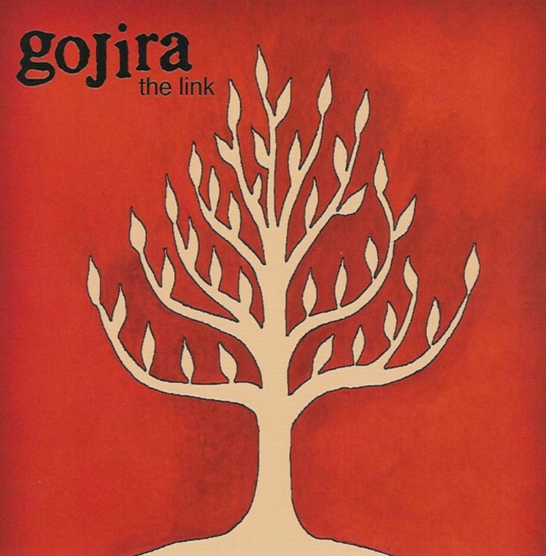

Este cuarteto francés se había superado a sí mismo con su último disco, el tercero, llamado from Mars to Sirius. Mostró una banda de metal aún más aventurera e innovadora que sigue martillando algunos de los riffs gruesos más memorables y arreglos maravillosos, probablemente como un hijo bastardo de Morbid Angel, Meshuggah y Killing Joke.
- The Link - I sit on a rock Cannot be touched by struggle & confusion I reclaim my space inside my structure Look at this point All is about nothing, everything comes near The remotest parts of the world By silence We can dissolve disruptive vibrations I have to try Gaïa's alive for good Under my feet the forest Over me the largest It's roundness i feel Lifelong misery How do we get to avalon? There is a bridge beyond Indestructible the earth is a temple I cannot see what is wrong and All gods are one I close my eyes I'm all around, i feel so present Embracing it's vastness i hold Facing the world I become a part of it I'm not alone anymore I embrace the world